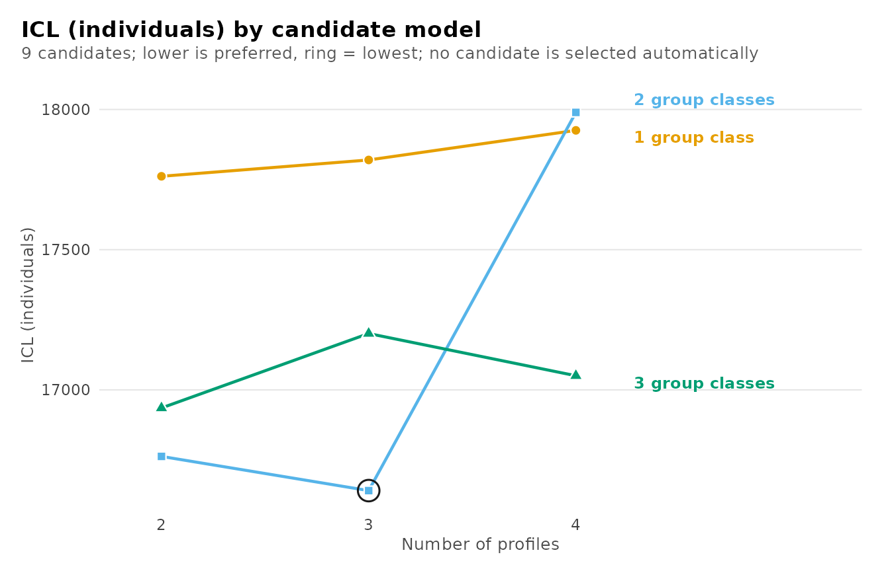
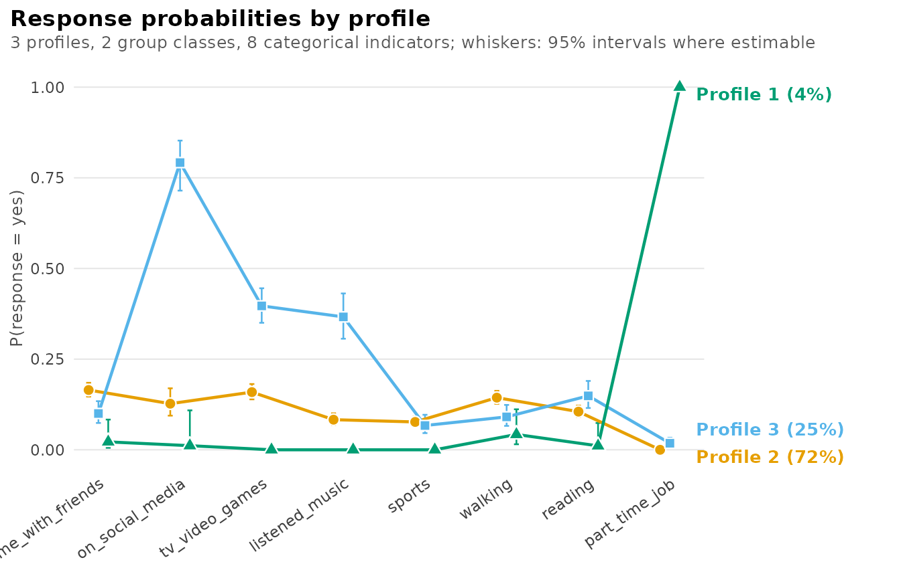

Case study: Two-level latent class analysis of leisure activities
Written by Mohammed Saqr and Sonsoles López-Pernas
Source:vignettes/articles/case-esm-lca.Rmd
case-esm-lca.RmdTwo-level latent class analysis estimates latent classes of categorical responses at the level of single observations and, above them, latent group classes that differ in how probable each class is for their observations. In the output the observation-level classes are called profiles. Each profile is described by the probability of every answer to every item; the group classes differ only in how often their observations fall in each profile.
The question here is whether the leisure activities that university students report in daily life form a small number of recurring patterns, and whether students differ in how often they are in each pattern.
Data
student_esm holds experience-sampling data from a study
of university students (Neubauer & Schmiedek, 2024). The students
answered six prompts a day for fourteen days. At each prompt when they
had not studied since the previous one, they reported which of eight
leisure activities they had done. The dataset holds these prompts for
100 students: 2,582 prompts, between 15 and 51 per student. Prompts are
the observations and students the groups, so a student contributes many
rows.
The eight activities are yes/no items, and they are named once so that each model can refer to them.
library(latents)
activities <- c("time_with_friends", "on_social_media", "tv_video_games",
"listened_music", "sports", "walking", "reading",
"part_time_job")summary() counts the answers to each activity item and
summarizes the other variables.
summary(student_esm)
#> student day beep time_with_friends on_social_media tv_video_games
#> Min. : 1.0 Min. : 0.00 Min. :1.00 no :2211 no :1837 no :2033
#> 1st Qu.: 27.0 1st Qu.: 3.00 1st Qu.:2.00 yes: 371 yes: 745 yes: 549
#> Median : 53.0 Median : 6.00 Median :3.00
#> Mean : 52.3 Mean : 6.48 Mean :3.06
#> 3rd Qu.: 79.0 3rd Qu.:10.00 3rd Qu.:4.00
#> Max. :100.0 Max. :13.00 Max. :5.00
#> listened_music sports walking reading part_time_job happy relaxed
#> no :2193 no :2397 no :2254 no :2291 no :2479 Min. :1.00 Min. :1.00
#> yes: 389 yes: 185 yes: 328 yes: 291 yes: 103 1st Qu.:4.00 1st Qu.:4.00
#> Median :5.00 Median :5.00
#> Mean :4.88 Mean :4.63
#> 3rd Qu.:6.00 3rd Qu.:6.00
#> Max. :7.00 Max. :7.00
#> worried exhausted
#> Min. :1.00 Min. :1.00
#> 1st Qu.:1.00 1st Qu.:2.00
#> Median :2.00 Median :3.00
#> Mean :2.29 Mean :3.31
#> 3rd Qu.:3.00 3rd Qu.:5.00
#> Max. :7.00 Max. :7.00Social media is the most frequent activity, reported at 745 of the 2,582 prompts, followed by TV or video games at 549. A part-time job is the rarest, at 103 prompts. Every item is answered “no” at most prompts, so a profile is described by how much more often than average its prompts say “yes”.
The model
For prompt of student , let be the profile and the student’s class. The model estimates three sets of probabilities:
- the response probabilities of each answer to item in profile , the same in every student class;
- the profile probabilities of each student class , which sum to one across profiles;
- the class probabilities .
The items are assumed independent given the profile, the prompts of a student independent given the student’s class, and the students independent of one another. The likelihood can have several local maxima, so each model is started from several random values. A rare answer can drive a response probability to its lower bound, and too many profiles or classes for the data show up as starts that fail to reach the same maximum.
How many profiles and classes
enumerate_classes() fits every combination of two to
four profiles and one to three student classes, each from twenty random
starts with a tight convergence tolerance, and reports the information
criteria and the diagnostics of each fit. It does not choose a
model.
candidates <- enumerate_classes(student_esm, vars = activities,
categorical = activities, id = "student",
n_profiles = 2:4, n_group_classes = 1:3,
n_starts = 20, tol = 1e-10, seed = 1)
#> 2 of 9 candidates reached their best log likelihood from one start only (classes3_groups3, classes4_groups3); refit those you consider with more starts.
as.data.frame(candidates)
#> candidate n_profiles n_group_classes model log_likelihood n_parameters aic kic
#> 1 classes2_groups1 2 1 <NA> -7892 17 15819 15839
#> 2 classes3_groups1 3 1 <NA> -7848 26 15749 15778
#> 3 classes4_groups1 4 1 <NA> -7807 35 15683 15721
#> 4 classes2_groups2 2 2 <NA> -7740 19 15518 15540
#> 5 classes3_groups2 3 2 <NA> -7678 29 15414 15446
#> 6 classes4_groups2 4 2 <NA> -7634 39 15346 15388
#> 7 classes2_groups3 2 3 <NA> -7710 21 15462 15486
#> 8 classes3_groups3 3 3 <NA> -7582 32 15228 15263
#> 9 classes4_groups3 4 3 <NA> -7520 43 15126 15172
#> bic_groups bic_individual sabic_groups sabic_individual caic_groups caic_individual awe_groups
#> 1 15863 15918 15809 15864 15880 15935 17836
#> 2 15817 15901 15735 15819 15843 15927 17933
#> 3 15774 15888 15664 15777 15809 15923 18078
#> 4 15567 15629 15507 15569 15586 15648 16845
#> 5 15490 15584 15398 15492 15519 15613 16767
#> 6 15447 15574 15324 15450 15486 15613 18159
#> 7 15517 15585 15450 15518 15538 15606 17027
#> 8 15312 15416 15211 15314 15344 15448 17340
#> 9 15238 15377 15102 15241 15281 15420 17238
#> awe_individual icl_groups icl_individual clc_groups clc_individual profile_entropy group_entropy
#> 1 17946 17706 17762 17628 17628 0.485 NA
#> 2 18102 17735 17820 17616 17616 0.662 NA
#> 3 18305 17812 17925 17650 17650 0.715 NA
#> 4 16969 16701 16763 16613 16613 0.668 0.877
#> 5 16956 16546 16641 16413 16413 0.804 0.878
#> 6 18413 17863 17989 17683 17683 0.652 0.914
#> 7 17163 16867 16935 16770 16770 0.609 0.814
#> 8 17548 17097 17201 16950 16950 0.660 0.914
#> 9 17517 16911 17050 16713 16713 0.745 0.908
#> avepp_min avepp_max avepp_mean avepp_below group_avepp_min group_avepp_max group_avepp_mean
#> 1 0.705 0.939 0.822 1 NA NA NA
#> 2 0.705 0.952 0.863 1 NA NA NA
#> 3 0.713 0.955 0.830 2 NA NA NA
#> 4 0.859 0.926 0.892 0 0.960 0.980 0.970
#> 5 0.858 0.991 0.927 0 0.952 0.971 0.962
#> 6 0.630 0.992 0.819 1 0.974 0.986 0.980
#> 7 0.878 0.888 0.883 0 0.885 0.931 0.912
#> 8 0.828 0.888 0.853 0 0.941 0.980 0.967
#> 9 0.813 0.991 0.887 0 0.948 0.970 0.957
#> group_avepp_below converged boundary min_standardized_eigenvalue min_gaussian_mass
#> 1 NA TRUE FALSE NA NA
#> 2 NA TRUE TRUE NA NA
#> 3 NA TRUE TRUE NA NA
#> 4 0 TRUE FALSE NA NA
#> 5 0 TRUE TRUE NA NA
#> 6 0 TRUE TRUE NA NA
#> 7 0 TRUE FALSE NA NA
#> 8 0 TRUE TRUE NA NA
#> 9 0 TRUE TRUE NA NA
#> n_best_replicated warnings error
#> 1 18 <NA>
#> 2 5 <NA>
#> 3 3 <NA>
#> 4 13 <NA>
#> 5 2 <NA>
#> 6 2 <NA>
#> 7 20 <NA>
#> 8 1 <NA>
#> 9 1 <NA>
get_results(candidates, "best")
#> criterion convention candidate n_profiles n_group_classes model value
#> 1 aic <NA> classes4_groups3 4 3 <NA> 15126
#> 2 kic <NA> classes4_groups3 4 3 <NA> 15172
#> 3 bic groups classes4_groups3 4 3 <NA> 15238
#> 4 bic individuals classes4_groups3 4 3 <NA> 15377
#> 5 sabic groups classes4_groups3 4 3 <NA> 15102
#> 6 sabic individuals classes4_groups3 4 3 <NA> 15241
#> 7 caic groups classes4_groups3 4 3 <NA> 15281
#> 8 caic individuals classes4_groups3 4 3 <NA> 15420
#> 9 awe groups classes3_groups2 3 2 <NA> 16767
#> 10 awe individuals classes3_groups2 3 2 <NA> 16956
#> 11 icl groups classes3_groups2 3 2 <NA> 16546
#> 12 icl individuals classes3_groups2 3 2 <NA> 16641
#> 13 clc groups classes3_groups2 3 2 <NA> 16413
#> 14 clc individuals classes3_groups2 3 2 <NA> 16413The criteria disagree, and the diagnostics explain why. BIC with the
number of students keeps falling up to the largest model in the grid,
four profiles and three classes. That model and the one with three
profiles and three classes reach their best solution from a single start
(n_best_replicated), so their low BIC rests on solutions
that the starts do not replicate. The criteria that also penalize
classification uncertainty (ICL, AWE and CLC counted over prompts)
choose three profiles and two classes, a model whose best solution
recurs in 2 of the twenty starts.
The number of starts is part of the analysis on these data. With five starts and the default tolerance, the three-profile, two-class model stops at a lower maximum of the likelihood, and the same criteria then choose two profiles and two classes.
The ICL plot shows the choice across the grid.
plot_enumeration(candidates, what = "icl_individual")
The plot marks the minimum at three profiles and two classes, and the analysis continues with that model.
The chosen model
multilca() fits it, treating every item as categorical,
with twenty random starts and a tight convergence tolerance, which the
standard errors below need.
lca <- multilca(student_esm, vars = activities, id = "student",
n_profiles = 3, n_group_classes = 2, n_starts = 20,
tol = 1e-10, seed = 1)
get_results(lca, "model")
#> n_observations n_informative n_groups n_profiles n_group_classes centering scaling
#> 1 2582 2582 100 3 2 none none
#> covariance_structure n_parameters n_parameters_with_measurement log_likelihood aic bic_groups
#> 1 VVI 29 29 -7678 15414 15490
#> bic_individual converged iterations boundary small_classes best_start n_best_replicated weights
#> 1 15584 TRUE 81 FALSE FALSE 16 2 <NA>The fit converges, and 2 of the twenty starts reach the best log likelihood of -7678.
Three activity profiles
The "responses" table gives the probability of each
answer in each profile, with a “no” and a “yes” row for every item. The
“yes” rows carry the information, since the two probabilities of an item
sum to one.
get_results(lca, "responses")
#> profile indicator category probability threshold probability_standard_error
#> 1 1 time_with_friends no 9.78e-01 3.801 0.01531
#> 2 2 time_with_friends no 8.35e-01 1.622 0.00972
#> 3 3 time_with_friends no 9.00e-01 2.196 0.01522
#> 4 1 time_with_friends yes 2.19e-02 NA 0.01531
#> 5 2 time_with_friends yes 1.65e-01 NA 0.00972
#> 6 3 time_with_friends yes 1.00e-01 NA 0.01522
#> 7 1 on_social_media no 9.89e-01 4.468 0.01353
#> 8 2 on_social_media no 8.73e-01 1.926 0.01911
#> 9 3 on_social_media no 2.08e-01 -1.337 0.03519
#> 10 1 on_social_media yes 1.13e-02 NA 0.01353
#> 11 2 on_social_media yes 1.27e-01 NA 0.01911
#> 12 3 on_social_media yes 7.92e-01 NA 0.03519
#> 13 1 tv_video_games no 1.00e+00 23.026 NA
#> 14 2 tv_video_games no 8.41e-01 1.665 0.01077
#> 15 3 tv_video_games no 6.03e-01 0.419 0.02436
#> 16 1 tv_video_games yes 1.00e-10 NA NA
#> 17 2 tv_video_games yes 1.59e-01 NA 0.01077
#> 18 3 tv_video_games yes 3.97e-01 NA 0.02436
#> 19 1 listened_music no 1.00e+00 23.026 NA
#> 20 2 listened_music no 9.17e-01 2.402 0.00821
#> 21 3 listened_music no 6.34e-01 0.547 0.03200
#> 22 1 listened_music yes 1.00e-10 NA NA
#> 23 2 listened_music yes 8.31e-02 NA 0.00821
#> 24 3 listened_music yes 3.66e-01 NA 0.03200
#> 25 1 sports no 1.00e+00 23.026 NA
#> 26 2 sports no 9.23e-01 2.486 0.00684
#> 27 3 sports no 9.33e-01 2.634 0.01269
#> 28 1 sports yes 1.00e-10 NA NA
#> 29 2 sports yes 7.68e-02 NA 0.00684
#> 30 3 sports yes 6.70e-02 NA 0.01269
#> 31 1 walking no 9.58e-01 3.120 0.02162
#> 32 2 walking no 8.56e-01 1.784 0.00912
#> 33 3 walking no 9.09e-01 2.304 0.01459
#> 34 1 walking yes 4.23e-02 NA 0.02162
#> 35 2 walking yes 1.44e-01 NA 0.00912
#> 36 3 walking yes 9.08e-02 NA 0.01459
#> 37 1 reading no 9.89e-01 4.508 0.01088
#> 38 2 reading no 8.95e-01 2.141 0.00802
#> 39 3 reading no 8.51e-01 1.744 0.01897
#> 40 1 reading yes 1.09e-02 NA 0.01088
#> 41 2 reading yes 1.05e-01 NA 0.00802
#> 42 3 reading yes 1.49e-01 NA 0.01897
#> 43 1 part_time_job no 5.66e-09 -18.989 NA
#> 44 2 part_time_job no 1.00e+00 23.026 NA
#> 45 3 part_time_job no 9.82e-01 3.995 0.00568
#> 46 1 part_time_job yes 1.00e+00 NA NA
#> 47 2 part_time_job yes 1.00e-10 NA NA
#> 48 3 part_time_job yes 1.81e-02 NA 0.00568The three profiles differ in media use and in work. At prompts in profile 3, students used social media with probability 0.792, watched TV or played video games with probability 0.397, and listened to music with probability 0.366. In profile 2 the same probabilities are 0.127, 0.159 and 0.083, and time with friends (0.165 against 0.100) and walking (0.144 against 0.091) are somewhat more likely. Both report sports at about 0.07. At prompts in profile 1 students worked at a part-time job with probability 1.000 and reported every other activity with probability below 0.05. Profile 3 is therefore a media-heavy pattern, profile 2 a pattern of little media use with the remaining activities at their usual low rates, and profile 1 a pattern of work with little else.
The response plot draws the same probabilities, one line per profile across the items.
plot_responses(lca)
The media-heavy and low-media lines separate on the three media items and nearly coincide on sports, while the work profile stands apart on the part-time job item.
Two student classes
The "counts" table gives the size of each profile and
class, and the "profile_probabilities" table the profile
mix of each student class.
get_results(lca, "counts")
#> level class effective_count effective_proportion
#> 1 individuals 1 91.4 0.0354
#> 2 individuals 2 1848.0 0.7157
#> 3 individuals 3 642.6 0.2489
#> 4 groups 1 43.6 0.4357
#> 5 groups 2 56.4 0.5643
get_results(lca, "profile_probabilities")
#> group_class profile probability group_class_probability
#> 1 1 1 0.00778 0.436
#> 2 1 2 0.46348 0.436
#> 3 1 3 0.52874 0.436
#> 4 2 1 0.05862 0.564
#> 5 2 2 0.92787 0.564
#> 6 2 3 0.01351 0.564The low-media profile holds 71.6% of prompts, the media-heavy profile 24.9% and the work profile 3.5%. The student classes differ sharply in their mix. In class 2, which holds 56.4% of students, 0.928 of prompts fall in the low-media profile, 0.059 in the work profile and only 0.014 in the media-heavy one. In class 1, with 43.6% of students, the media-heavy profile is the more common, at 0.529, and the work profile almost absent, at 0.008. Media-heavy leisure is therefore concentrated in a minority of students, and for them it is the usual pattern, while most students almost never report it. Part-time work appears mainly among the students of the low-media class.
The probability plot compares the two mixes.
plot_prevalence(lca)
Class 2 runs close to one on the low-media profile and close to zero on the media-heavy one; class 1 divides its prompts between those two profiles, with the larger share on the media-heavy profile.
Classification certainty
Profiles and classes are estimated as posterior probabilities.
Relative entropy summarizes how concentrated those probabilities are,
from 0 for no separation to 1 for certain assignment, and the
"classification" table reports the average posterior
probability of each assigned class.
get_results(lca, "entropy")
#> level n_classes n_units entropy_sum relative_entropy
#> 1 individuals 3 2582 556.82 0.804
#> 2 groups 2 100 8.48 0.878
get_results(lca, "classification")
#> level class n_modal proportion_modal estimated_n estimated_proportion average_posterior
#> 1 individuals 1 92 0.0356 91.4 0.0354 0.991
#> 2 individuals 2 1896 0.7343 1848.0 0.7157 0.930
#> 3 individuals 3 594 0.2301 642.6 0.2489 0.858
#> 4 groups 1 42 0.4200 43.6 0.4357 0.971
#> 5 groups 2 58 0.5800 56.4 0.5643 0.952
#> odds_correct_classification
#> 1 3110.0
#> 2 5.3
#> 3 18.2
#> 4 43.6
#> 5 15.3Relative entropy is 0.804 for prompts and 0.878 for students. A single prompt answers eight yes/no questions, which leaves its profile less certain; a student contributes many prompts, which pins down the class. The average posterior probability is 0.991 for prompts assigned to the work profile, 0.930 for the low-media profile and 0.858 for the media-heavy one, and 0.952 and 0.971 for the two student classes. Conclusions about students are therefore well supported, while an analysis of individual prompts should carry the posterior probabilities forward.
Local independence
The model assumes the items are independent within a profile. The
"residuals" table measures the association that each pair
of items keeps within a profile, with a chi-square test for each pair;
the ten largest are shown.
get_results(lca, "residuals") |> head(10)
#> profile indicator_1 indicator_2 kind observed expected residual effective_n
#> 1 profile_1 on_social_media walking categorical 0.4240 1.60e-16 0.4240 91.4
#> 2 profile_3 sports walking categorical 0.1661 3.80e-17 0.1661 642.6
#> 3 profile_3 time_with_friends walking categorical 0.1434 1.45e-17 0.1434 642.6
#> 4 profile_3 listened_music walking categorical 0.1331 7.66e-17 0.1331 642.6
#> 5 profile_3 listened_music reading categorical 0.1098 8.70e-17 0.1098 642.6
#> 6 profile_3 listened_music sports categorical 0.1082 1.42e-16 0.1082 642.6
#> 7 profile_2 tv_video_games walking categorical 0.0995 4.88e-17 0.0995 1848.0
#> 8 profile_3 tv_video_games part_time_job categorical 0.0862 1.42e-16 0.0862 642.6
#> 9 profile_2 time_with_friends reading categorical 0.0790 8.52e-17 0.0790 1848.0
#> 10 profile_2 time_with_friends tv_video_games categorical 0.0707 6.35e-17 0.0707 1848.0
#> statistic df p_value p_adjusted
#> 1 16.43 1 5.04e-05 0.00141
#> 2 17.73 1 2.55e-05 0.00107
#> 3 13.21 1 2.79e-04 0.00585
#> 4 11.38 1 7.43e-04 0.01040
#> 5 7.75 1 5.38e-03 0.05022
#> 6 7.52 1 6.09e-03 0.05118
#> 7 18.28 1 1.91e-05 0.00107
#> 8 4.77 1 2.90e-02 0.16212
#> 9 11.52 1 6.89e-04 0.01040
#> 10 9.23 1 2.38e-03 0.02856The largest residual, 0.424, links social media and walking in the work profile, which holds about 91 prompts, so it rests on few observations. Next, in the media-heavy profile, come sports and walking (0.166), friends and walking (0.143) and music and walking (0.133). Physical and social activities occur together more often than three profiles allow, which is one reason BIC rewards larger models: extra profiles can absorb this association.
Uncertainty in the response probabilities
parameter_inference() gives standard errors and 95% Wald
intervals for every parameter. Several response probabilities lie on
their bound: the work profile reports TV or games, music and sports with
probability zero and a part-time job with probability one, and the
low-media profile reports a part-time job with probability zero. Wald
inference does not apply at a bound, so boundary = "fix"
holds these probabilities at their values, leaves them out of the table
and reports the other parameters conditionally on them. The intervals of
the “yes” probabilities, in the rows whose term ends in
:yes, show how firmly the profiles are distinguished.
parameter_inference(lca, boundary = "fix")
#> level outcome term parameter estimate standard_error statistic
#> 1 measurement profile_1 time_with_friends:no response 0.97814 0.01531 NA
#> 2 measurement profile_1 time_with_friends:yes response 0.02186 0.01531 NA
#> 3 measurement profile_2 time_with_friends:no response 0.83512 0.00972 NA
#> 4 measurement profile_2 time_with_friends:yes response 0.16488 0.00972 NA
#> 5 measurement profile_3 time_with_friends:no response 0.89992 0.01522 NA
#> 6 measurement profile_3 time_with_friends:yes response 0.10008 0.01522 NA
#> 7 measurement profile_1 on_social_media:no response 0.98866 0.01353 NA
#> 8 measurement profile_1 on_social_media:yes response 0.01134 0.01353 NA
#> 9 measurement profile_2 on_social_media:no response 0.87283 0.01911 NA
#> 10 measurement profile_2 on_social_media:yes response 0.12717 0.01911 NA
#> 11 measurement profile_3 on_social_media:no response 0.20802 0.03519 NA
#> 12 measurement profile_3 on_social_media:yes response 0.79198 0.03519 NA
#> 13 measurement profile_2 tv_video_games:no response 0.84092 0.01077 NA
#> 14 measurement profile_2 tv_video_games:yes response 0.15908 0.01077 NA
#> 15 measurement profile_3 tv_video_games:no response 0.60316 0.02436 NA
#> 16 measurement profile_3 tv_video_games:yes response 0.39684 0.02436 NA
#> 17 measurement profile_2 listened_music:no response 0.91695 0.00821 NA
#> 18 measurement profile_2 listened_music:yes response 0.08305 0.00821 NA
#> 19 measurement profile_3 listened_music:no response 0.63351 0.03200 NA
#> 20 measurement profile_3 listened_music:yes response 0.36649 0.03200 NA
#> 21 measurement profile_2 sports:no response 0.92319 0.00684 NA
#> 22 measurement profile_2 sports:yes response 0.07681 0.00684 NA
#> 23 measurement profile_3 sports:no response 0.93301 0.01269 NA
#> 24 measurement profile_3 sports:yes response 0.06699 0.01269 NA
#> 25 measurement profile_1 walking:no response 0.95770 0.02162 NA
#> 26 measurement profile_1 walking:yes response 0.04230 0.02162 NA
#> 27 measurement profile_2 walking:no response 0.85617 0.00912 NA
#> 28 measurement profile_2 walking:yes response 0.14383 0.00912 NA
#> 29 measurement profile_3 walking:no response 0.90921 0.01459 NA
#> 30 measurement profile_3 walking:yes response 0.09079 0.01459 NA
#> 31 measurement profile_1 reading:no response 0.98910 0.01088 NA
#> 32 measurement profile_1 reading:yes response 0.01090 0.01088 NA
#> 33 measurement profile_2 reading:no response 0.89480 0.00802 NA
#> 34 measurement profile_2 reading:yes response 0.10520 0.00802 NA
#> 35 measurement profile_3 reading:no response 0.85126 0.01897 NA
#> 36 measurement profile_3 reading:yes response 0.14874 0.01897 NA
#> 37 measurement profile_3 part_time_job:no response 0.98193 0.00568 NA
#> 38 measurement profile_3 part_time_job:yes response 0.01807 0.00568 NA
#> 39 profile profile_1 group_class_1 probability 0.00778 0.00276 NA
#> 40 profile profile_2 group_class_1 probability 0.46348 0.03355 NA
#> 41 profile profile_3 group_class_1 probability 0.52874 0.03360 NA
#> 42 profile profile_1 group_class_2 probability 0.05862 0.00718 NA
#> 43 profile profile_2 group_class_2 probability 0.92787 0.01670 NA
#> 44 profile profile_3 group_class_2 probability 0.01351 0.01463 NA
#> 45 group group_class_1 <NA> probability 0.43573 0.06201 NA
#> 46 group group_class_2 <NA> probability 0.56427 0.06201 NA
#> p_value p_adjusted conf_low conf_high
#> 1 NA NA 0.91667 0.9945
#> 2 NA NA 0.00546 0.0833
#> 3 NA NA 0.81518 0.8533
#> 4 NA NA 0.14670 0.1848
#> 5 NA NA 0.86588 0.9261
#> 6 NA NA 0.07395 0.1341
#> 7 NA NA 0.89126 0.9989
#> 8 NA NA 0.00108 0.1087
#> 9 NA NA 0.83043 0.9058
#> 10 NA NA 0.09417 0.1696
#> 11 NA NA 0.14735 0.2853
#> 12 NA NA 0.71469 0.8526
#> 13 NA NA 0.81865 0.8609
#> 14 NA NA 0.13908 0.1813
#> 15 NA NA 0.55458 0.6498
#> 16 NA NA 0.35021 0.4454
#> 17 NA NA 0.89937 0.9317
#> 18 NA NA 0.06831 0.1006
#> 19 NA NA 0.56886 0.6937
#> 20 NA NA 0.30630 0.4311
#> 21 NA NA 0.90865 0.9356
#> 22 NA NA 0.06443 0.0913
#> 23 NA NA 0.90343 0.9540
#> 24 NA NA 0.04601 0.0966
#> 25 NA NA 0.88832 0.9847
#> 26 NA NA 0.01528 0.1117
#> 27 NA NA 0.83737 0.8731
#> 28 NA NA 0.12687 0.1626
#> 29 NA NA 0.87627 0.9340
#> 30 NA NA 0.06595 0.1237
#> 31 NA NA 0.92620 0.9985
#> 32 NA NA 0.00152 0.0738
#> 33 NA NA 0.87801 0.9095
#> 34 NA NA 0.09049 0.1220
#> 35 NA NA 0.81013 0.8847
#> 36 NA NA 0.11525 0.1899
#> 37 NA NA 0.96668 0.9903
#> 38 NA NA 0.00973 0.0333
#> 39 NA NA 0.00387 0.0156
#> 40 NA NA 0.39873 0.5295
#> 41 NA NA 0.46277 0.5937
#> 42 NA NA 0.04604 0.0744
#> 43 NA NA 0.88748 0.9545
#> 44 NA NA 0.00159 0.1054
#> 45 NA NA 0.32020 0.5587
#> 46 NA NA 0.44131 0.6798The profiles are clearly separated on the media items: the interval for social media is 0.715 to 0.853 in the media-heavy profile and 0.094 to 0.170 in the low-media profile. On sports the two intervals overlap almost entirely. The part-time job probability in the media-heavy profile has an interval of 0.010 to 0.033, close to zero, because very few of its prompts report a job.
Adding affect
A mixed model adds three affect ratings (happy, relaxed, exhausted,
each from 1 to 7) as continuous indicators. worried is left
out because about half of its ratings are 1, which can push a profile’s
variance to its lower bound. The same happens to exhausted
with three profiles: one profile collects the prompts rated 1 and its
variance reaches the bound, so the mixed model is fitted with two
profiles and two classes.
mixed <- multilpa(student_esm,
vars = c("happy", "relaxed", "exhausted", activities),
categorical = activities, id = "student", n_profiles = 2,
n_group_classes = 2, n_starts = 10, seed = 1)
get_results(mixed)
#> profile indicator mean variance standard_deviation mean_standard_error variance_standard_error
#> 1 1 happy 3.59 1.947 1.395 0.0690 0.0918
#> 2 1 relaxed 3.33 1.855 1.362 0.0598 0.0856
#> 3 1 exhausted 4.33 2.819 1.679 0.0637 0.1258
#> 4 2 happy 5.85 0.749 0.865 0.0346 0.0353
#> 5 2 relaxed 5.59 1.188 1.090 0.0457 0.0607
#> 6 2 exhausted 2.55 2.246 1.499 0.0498 0.0952
get_results(mixed, "responses")
#> profile indicator category probability threshold probability_standard_error
#> 1 1 time_with_friends no 0.9158 2.387 0.00906
#> 2 2 time_with_friends no 0.8118 1.461 0.01097
#> 3 1 time_with_friends yes 0.0842 NA 0.00906
#> 4 2 time_with_friends yes 0.1882 NA 0.01097
#> 5 1 on_social_media no 0.6848 0.776 0.01499
#> 6 2 on_social_media no 0.7314 1.002 0.01241
#> 7 1 on_social_media yes 0.3152 NA 0.01499
#> 8 2 on_social_media yes 0.2686 NA 0.01241
#> 9 1 tv_video_games no 0.7801 1.266 0.01344
#> 10 2 tv_video_games no 0.7928 1.342 0.01117
#> 11 1 tv_video_games yes 0.2199 NA 0.01344
#> 12 2 tv_video_games yes 0.2072 NA 0.01117
#> 13 1 listened_music no 0.8680 1.884 0.01112
#> 14 2 listened_music no 0.8354 1.624 0.01014
#> 15 1 listened_music yes 0.1320 NA 0.01112
#> 16 2 listened_music yes 0.1646 NA 0.01014
#> 17 1 sports no 0.9537 3.026 0.00718
#> 18 2 sports no 0.9093 2.306 0.00785
#> 19 1 sports yes 0.0463 NA 0.00718
#> 20 2 sports yes 0.0907 NA 0.00785
#> 21 1 walking no 0.9042 2.244 0.00948
#> 22 2 walking no 0.8496 1.732 0.00974
#> 23 1 walking yes 0.0958 NA 0.00948
#> 24 2 walking yes 0.1504 NA 0.00974
#> 25 1 reading no 0.8823 2.014 0.01050
#> 26 2 reading no 0.8911 2.102 0.00862
#> 27 1 reading yes 0.1177 NA 0.01050
#> 28 2 reading yes 0.1089 NA 0.00862
#> 29 1 part_time_job no 0.9490 2.924 0.00708
#> 30 2 part_time_job no 0.9684 3.423 0.00491
#> 31 1 part_time_job yes 0.0510 NA 0.00708
#> 32 2 part_time_job yes 0.0316 NA 0.00491
get_results(mixed, "profile_probabilities")
#> group_class profile probability group_class_probability
#> 1 1 1 0.874 0.369
#> 2 1 2 0.126 0.369
#> 3 2 1 0.167 0.631
#> 4 2 2 0.833 0.631With affect included, the profiles become profiles of mood. Profile 1 has mean ratings of 5.85 for happy, 5.59 for relaxed and 2.55 for exhausted; profile 2 has 3.59, 3.33 and 4.33. The activities now differ less and in a different way: time with friends is reported at 0.188 of profile-1 prompts and 0.084 of profile-2 prompts, social media at 0.269 and 0.315. Good mood goes with social time more than with media use. The student classes remain distinct: 0.874 of the prompts of class 1 fall in the low-mood profile, and 0.833 of those of class 2 in the good-mood profile. The profiles a model finds are set by the indicators it is given, so the choice of indicators is part of the question.
Interpretation
Students’ leisure at non-study prompts falls into three patterns: one defined by social media, TV and music, one with little media use, and a small one of part-time work with little else. The distinction that matters most is between students: a majority almost never reports the media-heavy pattern, and a minority reports it at more than half of their prompts. Part-time work appears mainly among the majority. That student-level result is well supported by the classification diagnostics, while the assignment of any single prompt is less certain.
Limitations
The data contain only prompts at which the student had not studied, so the patterns describe leisure time, not the whole day. The three-profile model leaves association between physical and social activities within its profiles, and larger models fit better by BIC but are not stable across starts on these data. The choice of three profiles itself depends on enough starts: with few, the model stops at a lower maximum and two profiles are chosen. Prompts are treated as independent given the student’s class, so the model ignores the order of prompts within a day. The associations are observational and say nothing about causes.
Reference
Neubauer, A. B., & Schmiedek, F. (2024). Approaching academic adjustment on multiple time scales. Zeitschrift für Erziehungswissenschaft, 27(1), 147-168. https://doi.org/10.1007/s11618-023-01182-8